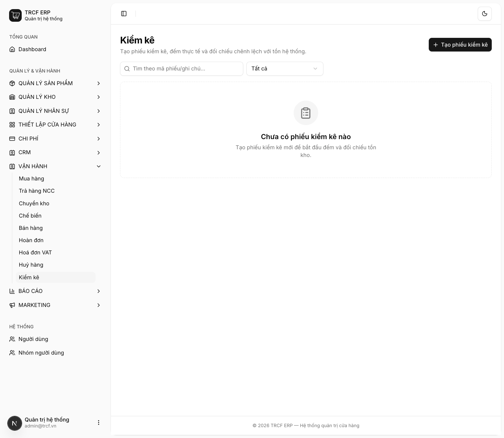
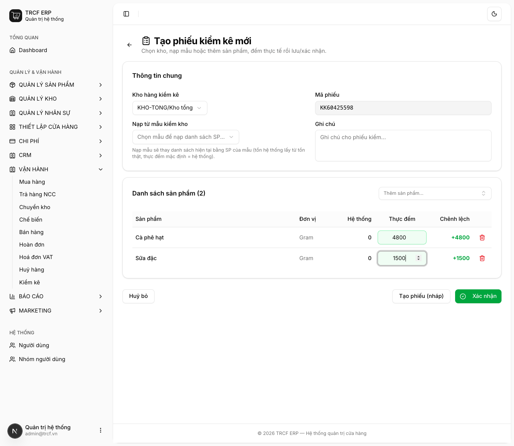
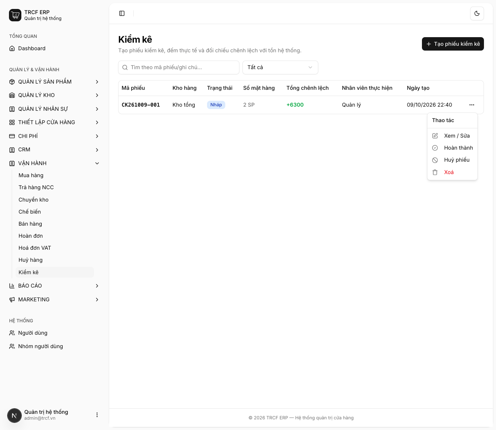

Chương 6 · Chi tiết các nghiệp vụ kho
6.6 Kiểm kê tồn kho
1. Đường dẫn vào chức năng
Menu trái: Vận hành → Kiểm kê (địa chỉ /stock-checks).
Dựng mẫu kiểm kho trước ở: Quản lý kho → Mẫu kiểm kho (không bắt buộc).
2. Ví dụ nền và các bước thực hiện
Ví dụ: kiểm "Kho tổng", đếm 2 mặt hàng.
- "Cà phê hạt": hệ thống 0 g, đếm thật "4800" g.
- "Sữa đặc": hệ thống 0 g, đếm thật "1500" g.
- Tổng chênh lệch: +6300.
Bước 1Mở trang Kiểm kê
- Bấm Vận hành ở menu trái, chọn Kiểm kê.
- Bấm Tạo phiếu kiểm kê (mã phiếu tự sinh).

Bước 2Khai phiếu và đếm hàng
- Kho hàng kiểm kê: chọn "KHO-TONG/Kho tổng".
- Nạp danh sách hàng cần đếm (xem 2 cách bên dưới).
- Ở đây: bấm ô Thêm sản phẩm..., chọn "Cà phê hạt", rồi "Sữa đặc".
- Đi đếm thật, nhập vào cột Thực đếm: "4800" và "1500".
- Cột Chênh lệch tự tính.
- Chưa đếm xong: bấm Tạo phiếu (nháp), quay lại làm tiếp sau.

Bước 3Hoàn thành phiếu
- Phiếu nháp hiện trong danh sách: số mặt hàng, Tổng chênh lệch.
- Bấm nút … cuối dòng.
- Menu có: Xem / Sửa, Hoàn thành, Huỷ phiếu, Xoá.
- Đếm xong hết: rà lại dòng chênh lệch lớn, rồi chọn Hoàn thành (hoặc bấm Xác nhận ngay trong form).

3. Giải thích các trường
Hai cách nạp danh sách
| Cách | Khi nào dùng |
|---|---|
| Nạp từ mẫu kiểm kho | Có mẫu dựng sẵn (Quản lý kho → Mẫu kiểm kho). Nhanh, không sót mặt hàng. Nạp mẫu thay danh sách hiện tại |
| Thêm sản phẩm từng món | Kiểm lẻ vài mặt hàng |
Các cột
| Cột | Nghĩa |
|---|---|
| Hệ thống | Tồn hiện tại theo hệ thống |
| Thực đếm | Số bạn đếm được |
| Chênh lệch | Tự tính = Thực đếm − Hệ thống |
Lịch kiểm kê gợi ý
| Loại hàng | Tần suất |
|---|---|
| Hàng dễ hỏng | Hằng ngày, cuối ca |
| Hàng khô | Hằng tuần |
| Toàn bộ | Cuối tháng |
4. Lưu ý quan trọng
⚠️
Xác nhận là ghi đè tồn kho.
- Đếm sai một con số thì tồn kho sai theo.
- Phải kiểm lại lần nữa mới sửa được.
⚠️
Phiếu đã hoàn thành không sửa, không xoá.
💡
Dựng mẫu kiểm kho theo khu vực: "Quầy pha chế", "Kho khô", "Tủ đông".
- Đếm theo khu nhanh và ít sót hơn đếm theo danh sách toàn quán.
💡